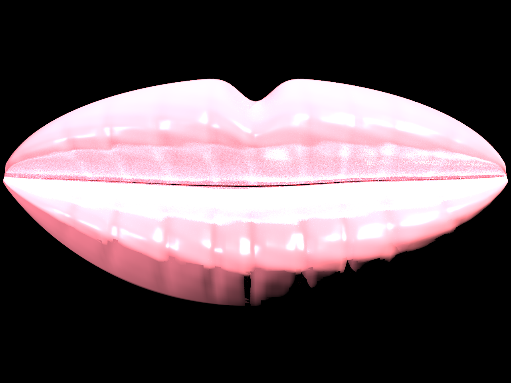
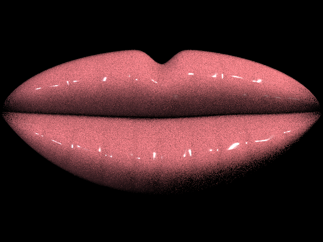
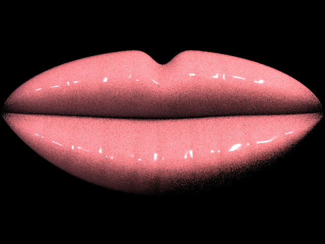
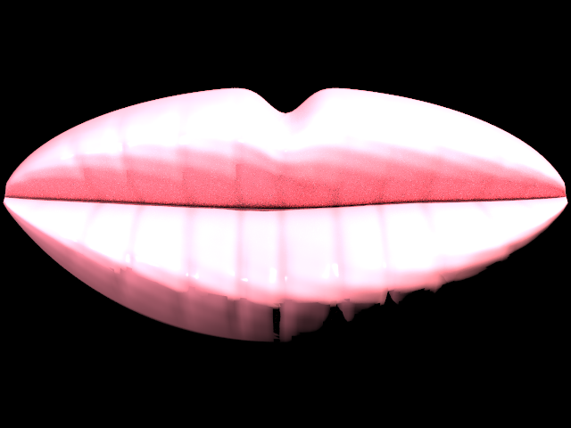
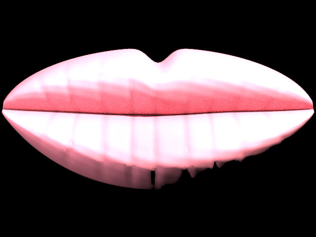
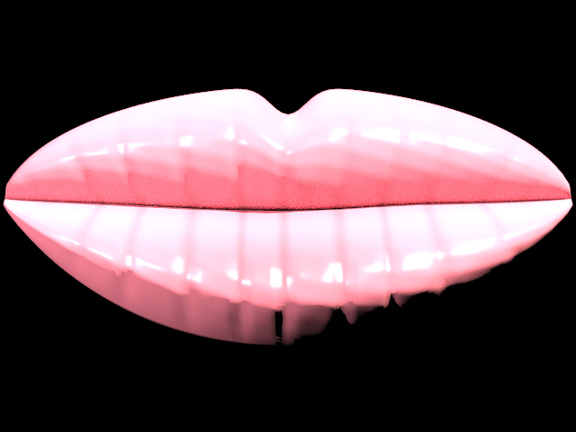
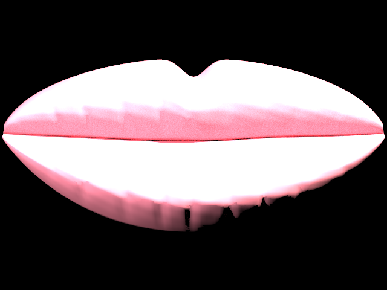

Lip Service: Pathtracing Viscous Dielectrics
Link to webpage: https://cal-cs184-student.github.io/hw-webpages-Draosy/final-project/milestone.html
Link to GitHub repository: https://github.com/jadewang26/184-final-proj-lipgloss
Link to video: https://drive.google.com/file/d/11dR3UGaUU76iCByFEFnpqht5db7Xpc4O/view?usp=sharing
Abstract
Rendering human features requires accurately modeling complex light interactions across multiple biological and sometimes applied layers. This is especially true when trying to render human lips with lip gloss applied on top, as we must accurately simulate how light is reflected and absorbed by not only the glossy top layer, but also its underlying skin. Our project extends the C++ path tracer in Homework 3 to simulate lip gloss by implementing a custom Layered BSDF that blends an approximate BSSRDF to capture the subsurface scattering and coloration of human tissue with a BSDF that simulates the glossy coating. We experimented with various different BSDFs to see which one would simulate our glossy coating the best. We also added parameters to the gloss layer such as Roughness (dictating the shine of the dielectric layer), Thickness (acting as the layer's opacity), Base Color, a Saturation multiplier, and the Index of Refraction (IOR). We then extended the project to include a fully volumetric random walk subsurface scattering model to compare with our layered approximations.Technical Approach
Base Layer (BSSRDF)
The base layer of the lip model, or the fleshy skin-like layer, was modeled using an Approximate BSSRDF, or Bidirectional Scattering Surface Reflectance Distribution Function. We thought simulating the internal light transport would be too computationally expensive and not worth it since this would be going under a much more important top layer, so we approximated the subsurface scattering effect by using a cosine factor.Gloss Layer (Cook-Torrance BSDF)
For our first iteration of our Layered BSDF, we used the Cook-Torrance Microfacet BSDF for our gloss layer. This basically treats the gloss layer as a bunch of microscopic mirrors or microfacets, which works because we want an extremely glossy surface. The specular reflectance of this layer is given by the formula:

|
We calculated
h as the normalized half-vector and passed it into each part of the Cook-Torrance BSDF. The first part is D or the Normal Distribution Function, which contributes to the size, shape, and sharpness of the glossy highlights and is connected to our roughness parameter. We chose to use GGX Distribution (between Beckmann, Phong, and GGX, the paper seemed to recommend the latter) since it has stronger tails and better shadowing. For F, or Fresnel Reflectance, which uses the ior or index of refraction parameter, and is in control of the reflection on the edges of the lips, we used Schlick's approximation to interpolate the ior at grazing angles. Finally, G or Geometry Shadowing, which darkens the edges of the lips to prevent unnatural glowing, used the the separable product of the shadowing and masking components G1 for both wi and wo.
Experimenting with Other BSDFs
Since Cook-Torrance BSDF is expensive, we tested other BSDFs as well. Normalized Blinn-Phong BSDF using the Kelemen geometry approximation was much better in terms of speed since it doesn’t include expensive square roots and complex trigonometric divisions. It simplifies the geometry term G and the denominator of the standard microfacet model into a single, highly efficient calculation. Also, unlike the old-school OpenGL Blinn-Phong model, this normalized version is physically based and conserves energy, meaning it fits perfectly into a path tracer. However, after trying this we found it was worse in terms of gloss and appeared granier.Another BSDF we tried was the Disney Principled Subsurface Approximation to get a more fleshy and translucent lip look combined with a wet clearcoat. We modified the ss_factor equation so that putting a light behind the lips will have the edges appear to softly glow rather than reducing to dark shadows. By multiplying the flesh contribution by 1-f, the specular highlights stand out much sharper against the diffuse color, making it look more realistically wet.
Procedural Lip Geometry
Instead of relying on a texture or a downloaded mesh, we generate the lip model insrc/pathtracer/generate_lip.cpp. The mesh is made from three parametric patches: an upper lip, a lower lip, and a narrow recessed mouth crease. Each patch is tessellated into triangles and exported into dae/final-project/lips1.dae with per-vertex normals. The upper lip function shapes the Cupid's bow, side tapering, central swell, and border recession. The lower lip function adds a larger central pillow and softer lower border. The mouth crease sits slightly behind both lips, which makes the line between the upper and lower lip read as depth instead of a bent surface.
This part of the project used ideas from the CS184 mesh lecture,
08-meshes.pptx. Our representation is not a general subdivision surface; it is a direct procedural triangle mesh. That was a deliberate subset of the mesh techniques covered in class because the lip shape needed to be easy to tune. Parameters such as the Cupid's bow dip, vertical folds, central lower-lip bulge, corner recession, and crease depth gave us artistic control while still producing ordinary indexed triangle geometry that the existing BVH and path tracer could render.
Layered BSDF Sampling Fix
The layered BSDFs evaluate the following mixture model:
\[
f(\omega_o,\omega_i) = (1-t) f_{base}(\omega_o,\omega_i) + t f_{gloss}(\omega_o,\omega_i).
\]
Here, \(f_{base}\) and \(f_{gloss}\) are the ApproximateBSSRDF base and gloss components respectively.
Our original sampler updated pdf to correspond to either the base or gloss branch while returning the full BSDF value.
For the path tracing estimator
\(f L_i |\cos\theta_i| / p(\omega_i)\), the PDF must be the same density that could
have produced the sampled direction [PBRT, pp. 56-58].
In other words, the denominator came from only one branch, which biased our estimator.
We corrected this by setting pdf to the mixture density
\[
p_{mix}(\omega_i) = (1-t)p_{base}(\omega_i) + t p_{gloss}(\omega_i).
\]
Volumetric Random-Walk SSS
We wanted to compare the rendering output of the BSSRDF approximation to a subsurface scattering implementation based on volumetric light transport. This idea was mentioned in Section 4.3.2 of PBRT [PBRT, p. 159] and argued to produce more natural looking results in Chiang et al. [Chiang et al.], although we do not use their reparameterization. Our implementation of random-walk subsurface scattering estimation follows.
The random walk estimation uses absorption \(\sigma_a\), scattering \(\sigma_s\), anisotropy g, index of refraction ior, scale,
roughness, and specular weight parameters implemented in the RandomWalkSSSBSDF class. The path integrator detects this material on
spheres or watertight triangle meshes, then enters the object and samples the free flight distances
\[
d_s = -\log(1-\xi)/\bar{\sigma_t}, \quad
\bar{\sigma_t} = (\sigma_{t,r}+\sigma_{t,g}+\sigma_{t,b})/3
\]
where \(\xi\) is a random variable uniformly sampled from \([0, 1]\).
If a scatter occurs before the ray exits the volume, we attenuate the transmitted light (throughput) by
\(\exp(-\sigma_a d_s)\sigma_s/(\sigma_a+\sigma_s)\) and resample the direction using the
Henyey-Greenstein phase function
[PBRT, pp. 711-713], [Henyey and Greenstein].
The maximum number of internal reflections is capped at 16 and is not related to max_ray_depth.
Interior scattering only updates the path throughput and samples a new direction. The light estimate itself only occurs when the walk exits the volume. If the ray never internally scattered, the code treats the event as a ballistic transmission and continues the camera path through the object. Otherwise, if the ray did scatter internally, the light estimate becomes a surface sample of scene lights from that exit point. The integrator tests for visibility with a shadow ray, applies Fresnel transmission through the boundary, then adds the surviving contribution back to the camera path [PBRT, pp. 821-824].
Spheres are handled in the obvious way. Triangle meshes, on the other hand, are handled by treating the mesh as a closed boundary. After the ray enters the surface it traces through the BVH to find the next intersection and accepts that hit only if it belongs to the same mesh as the entry triangle. The interior volume is thus defined wherever a ray can travel from one triangle of the mesh to another triangle of the same mesh, so this requires watertight meshes.
We compute a base tint
c_b=clamp(base_color * saturation) that is multiplied with the exit contribution after the random walk.
The base_color and saturation are parameters that can be set by the user.
This allows us to give a shade to our lip gloss choices.
The color coming from the random walk and underlying skin is determined by our chromatic absorption coefficient \(\sigma_a\). It has red, blue, and green channels. The larger the color channel of \(\sigma_a\), the more of the corresponding color contribution is attenuated by \(T(d)=\exp(-\sigma_a d)\).
The semi-glossy boundary itself is modeled as a Fresnel microfacet reflector. At entry, Schlick Fresnel
[Schlick] estimates how much light reflects from the dielectric interface
before entering the volume. The direct and recursive glossy boundary terms use a GGX normal distribution and Smith
masking term [PBRT, pp. 573-578], so lower roughness produces stronger highlights while higher
specular_weight assigns more energy to the boundary layer.
Results
Here is a side-by-side comparison of the different BSDFs we tested for our gloss layer:

|

|

|
Here is a side-by-side comparison of the Cook-Torrance BSDF at different roughness and thickness levels:

|

|

|
Disney Sampling Fix
The following comparisons on the lips2.dae scene demonstrate the impact of the layered BSDF sampling fix:
|
 lips2.dae; 1280x960; 64 spp; max ray depth 5; light samples 2; roughness 0.18;
thickness 0.45; base color (0.82, 0.22, 0.26); saturation 1.2; IOR 1.5.
|
lips2.dae; 640x480; 64 spp; max ray depth 5;
light samples 2; roughness 0.18; thickness 0.45; base color (0.82, 0.22, 0.26); saturation 1.2; IOR 1.5.
|
Random-Walk Layered Renders
Random walk layered coefficients for baseline: \(\sigma_a=(0.013,0.070,0.145)\),
\(\sigma_s=(1.09,1.59,1.79)\), \(g=0.0\), IOR 1.3, scale 5.0, surface roughness 0.18,
specular weight 0.45, derived base-layer weight 0.55, base color (0.82,0.22,0.26), saturation 1.2.
The second row uses the same lips2.dae mesh, camera, and lighting for the three layered BSDFs
and the standalone ApproximateBSSRDF, all at 640x480, 64 spp, max ray depth 4, and 2 light samples.

|
 |

|
 |
|
 |
 |
 |
 |
References
CS184 lecture slides: 08-meshes.pptx, 9-11-ray-tracing+acceleration.pptx, 12- integration.pdf, 13-global-illumination-path-tracing.pdf, 14-material.pdf, and 15- Color-and-Perception.pdf.Brent Burley, "Physically-Based Shading at Disney," 2012. https://disneyanimation.com/publications/physically-based-shading-at-disney/
Bruce Walter et al. “Microfacet Models for Refraction through Rough Surfaces.” EGSR 2007, doi:10.2312/EGWR/EGSR07/195-206
Henrik Wann Jensen et al., "A Practical Model for Subsurface Light Transport," 2001. doi:10.1145/383259.383319
Robert L. Cook and Kenneth E. Torrance, "A Reflectance Model for Computer Graphics," 1982. doi:10.1145/357290.357293
M. Pharr, W. Jakob, and G. Humphreys, Physically Based Rendering: From Theory to Implementation, 4th ed. Cambridge, MA: MIT Press, 2023. Online: https://pbr-book.org/4ed/contents.
L. G. Henyey and J. L. Greenstein, "Diffuse Radiation in the Galaxy," The Astrophysical Journal, vol. 93, pp. 70-83, 1941. Online: https://articles.adsabs.harvard.edu/pdf/1941ApJ....93...70H.
C. Schlick, "An Inexpensive BRDF Model for Physically-Based Rendering," Computer Graphics Forum, vol. 13, no. 3, pp. 233-246, 1994. Online: https://diglib.eg.org/items/581037f7-1e5c-4859-a107-6dfeeb8f3ccb.
M. J.-Y. Chiang, P. Kutz, and B. Burley, "Practical and Controllable Subsurface Scattering for Production Path Tracing," SIGGRAPH 2016 Talks, 2016. Online: https://disneyanimation.com/publications/practical-and-controllable-subsurface-scattering-for-production-path-tracing/.
Team Contributions
- Andrea Dao: Experimented with implementing different BSDFs (Normalized Blinn-Phong BSDF, Disney Principled Subsurface Approximation), analyzing their tradeoffs (speed vs. quality)
- Jade Wang: Implemented initial version of the Layered BSDF with Approximate Subsurface Scattering (BSSRDF) and Cook-Torrance BSDF. Handled logistical work such as work distribution, initial project proposal & milestone, and video compilation.
- Tunmise Akanle: Created the realistic lip mesh and added some texturing. Compared the results of different parameters (roughness and thickness).
- David Smith: Wrote the biasing fix. Implemented the volumetric random-walk model. Extended the GUI to allow for live parameter adjustments and material switching.